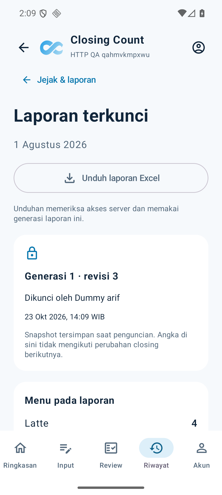
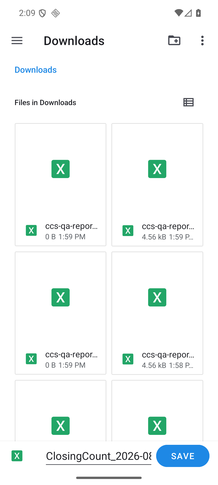
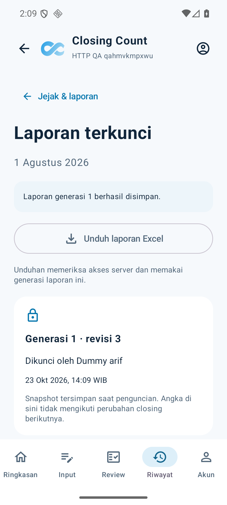
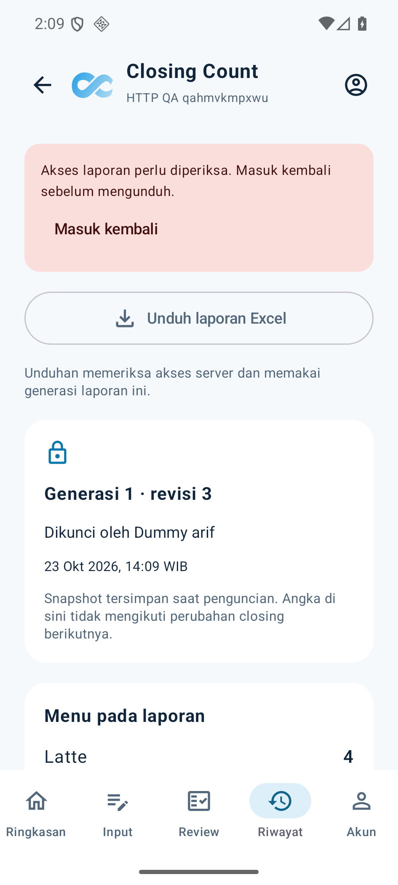
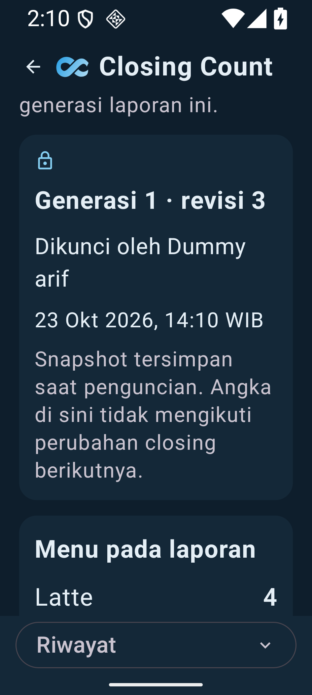
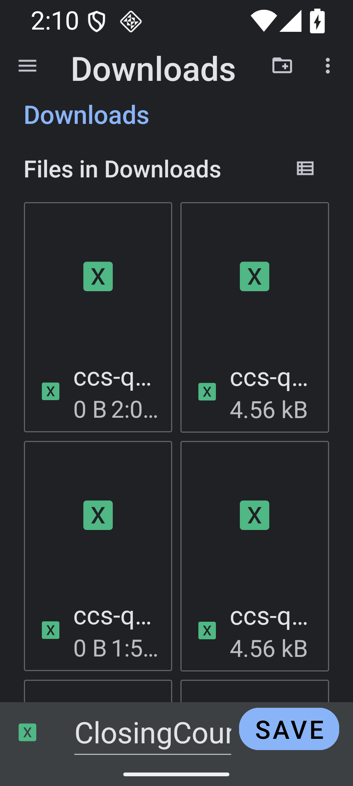
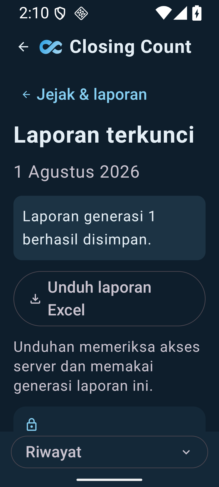
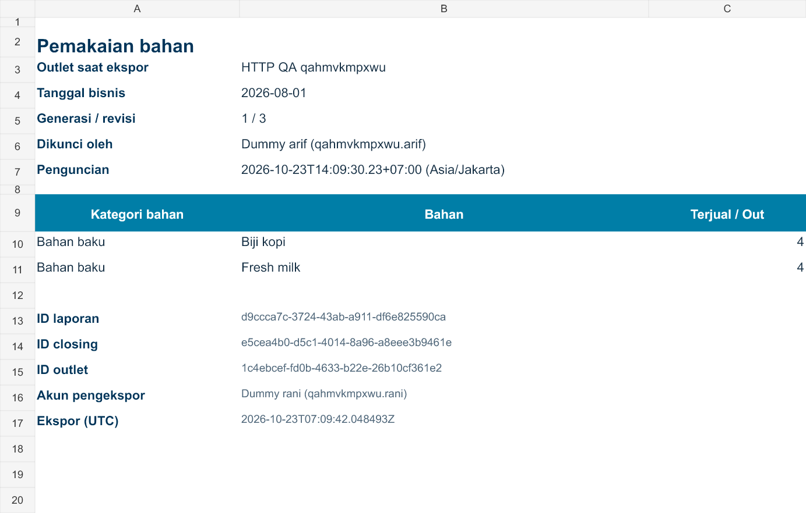
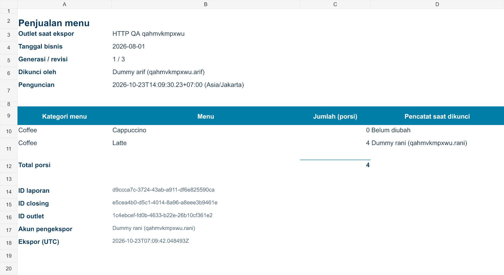

Laporan generasi 1 tetap berisi 4 porsi setelah closing dibuka ulang dan angka aktif menjadi 6. Akses diperiksa kembali sesudah dialog simpan. Berkas berhasil berisi dua tab; sesi kedaluwarsa tidak menulis isi laporan.
Tema terang · teks 100%
Urutan laporan terkunci, dialog sistem, penyimpanan berhasil, dan akses yang perlu diperbarui.

Angka historis 4; closing aktif telah menjadi 6.

DocumentsUI asli, bukan simulasi picker.

Activity dibuat ulang; request picker tidak diklaim dua kali.

Session kedaluwarsa: file placeholder sistem tetap kosong.
Tema gelap · teks 200%
Skenario sama pada 360×800dp, dengan teks besar dan navigasi ringkas.

Laporan dapat digulir untuk membaca isinya.

Tampilan dialog mengikuti penyedia dokumen Android.

Pesan hasil dan tombol unduh pada teks besar.
 Angka historis tetap 4 setelah akses kedaluwarsa. Tombol masuk ulang diperiksa sebelum layar digulir ke angka ini.
Angka historis tetap 4 setelah akses kedaluwarsa. Tombol masuk ulang diperiksa sebelum layar digulir ke angka ini.
Dua tab pada file Excel
Render read-only dari file yang disimpan melalui Android. Angka, nama historis, pencatat, identitas laporan dan total dibandingkan dengan snapshot server. Nama outlet diberi label sebagai nama saat ekspor.

Pemakaian bahan · angka numerik dari resep dan kuantitas pada laporan terkunci.

Penjualan menu · pencatat saat dikunci, total SUM, dan metadata pelacakan.